イラストレーション部 夏の交通事故防止府民運動初日の啓発活動
{kind=link}
{kind=link}
{kind=link}
{kind=link}
{kind=link}
令和3年度の夏の交通事故防止府民運動で配布されるうちわのデザインに、山城高校イラストレーション部の制作したイラストが採用されました。
７月21日（水）には、イズミヤ白梅町店前にて、うちわをはじめとするグッズを道行く方々にお渡しし、交通事故防止を呼びかける活動を行いました。
部員は慣れない活動に始めは緊張していましたが、だんだんと勇気を持って話しかけられるようになり、20分ほどで予定していた200枚を配りきりました。
活動終了後、北警察署より感謝状を、京都府交通対策協議会より記念品をいただきました。
普段学校の外で活動することが少ないイラストレーション部にとって、貴重な経験となりました。
野球部 2021年全国高等学校野球選手権京都府大会1回戦
7月12日（月）に行われました、2021年全国高等学校野球選手権京都府大会１回戦において、京都府立亀岡高等学校と対戦し４－３で見事勝利することができました。
２回戦は、東山高等学校との対戦で、7月17日（土）14：00よりわかさスタジアム京都にて行われます。


◎令和３年度 女子テニス部 紹介
女子テニス部は、テニスを愛し、テニス部の一員であることを誇りにし、
心身を鍛え、試合で勝つことの喜びを得るために、日々練習しています。
・部員：１年７名 ２年９名 ３年７名 計２３名
(なお、３年生は現在は現役を退いています。)
・活動時間：平 日 ２時間～３時間（木曜日は練習なし）
土曜日 ３時間～５時間
日曜日 ３時間～５時間
・年間の試合：京都府高体連の大会（団体戦３回 個人戦３回）
京都府テニス協会の大会（個人戦３回）
長岡京市テニス協会、亀岡市テニス協会の大会
・その他：京都府下および近畿各県の高校との練習試合
夏期、秋期の合宿
◎活動報告 ６月：新チーム最初の取り組みとして
シングルス部内戦を行い、部内順位を決めました。
◎練習試合：７月１０日（土）、太陽ヶ丘テニスコートで、
南陽高校と、新チーム最初の練習試合を行いました。
新型コロナウイルス感染拡大防止のため、
長い間活動に制限が加えられ、
十分な練習ができていない中、
みんな成果を残すことができました。
特に、１年生の初心者にとっては、
初めての体験でしたが、
立派に戦うことができました。
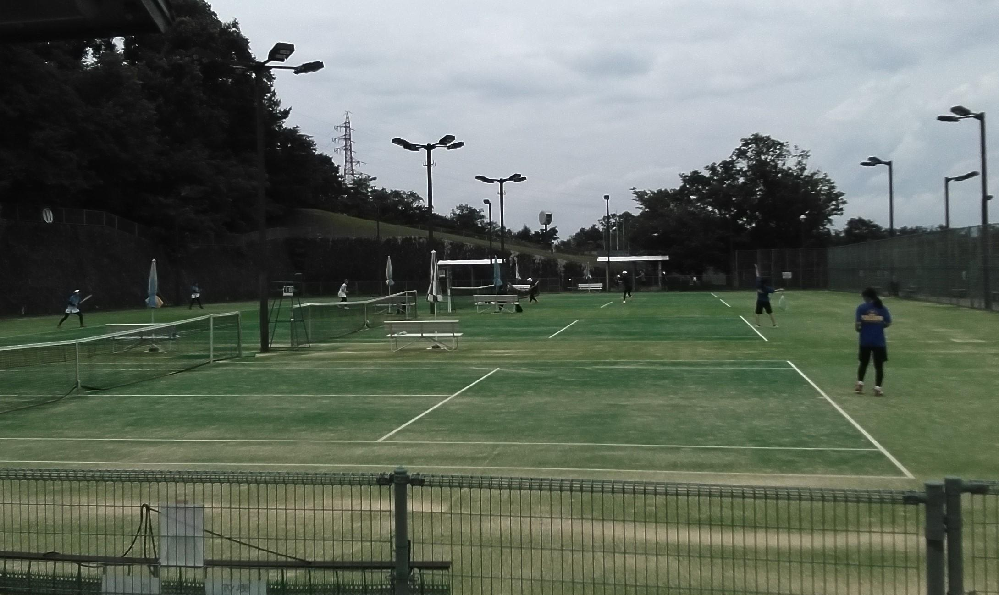
第89回京都府高等学校選手権水泳競技大会 競泳競技結果
令和３年６月２６、２７日に京都アクアリーナで京都府高等学校選手権が行われました。
昨年は新型コロナウイルス感染症の影響で開催されませんでしたので、２年ぶりの府下大会となりました。
近畿大会、インターハイとつながる大事な大会に、チーム一丸となって挑みました。
３年生は近畿大会へ進めなければ、この大会で引退となります。そんな中、３年生はチームを引っ張る見事な泳ぎを見せてくれました。後輩たちも３年生の凄さを感じたと思います。
結果は、近畿大会個人種目出場７名、リレーでの出場が７名。１４名で京都で開催される近畿大会に出場します。
自己ベストを更新していなければ近畿大会への出場を逃してしまうレースがいくつもあり、決勝でそれぞれが、これまでの自分の限界を突破して見事に近畿大会の出場権を勝ち取ってくれました。
中には、決勝で９位となり近畿大会へ進めず、予選１１位で決勝へ進めずといった悔しい思いをした生徒もいました。彼らは、その悔しさを忘れることなく次の大会で活躍してくれると思います。
さあ、次は京都での近畿大会、インターハイへ向けての挑戦が続きます。近畿大会も無観客となりますが、引き続き熱い応援よろしくお願いいたします。
大会結果
男子
５０ｍ自由形 第２位 材野 司 ２４秒８０
１００ｍ自由形 第４位 材野 司 ５４秒１９
４ｘ１００ｍフリーリレー 第７位 ３分４８秒８９
材野 司、内田 誓志郎、福本 翔一朗、生田 紘基
４ｘ２００ｍフリーリレー 第８位 ８分３１秒９６
材野 司、内田 誓志郎、平井 然一、中村 颯太
女子
１００ｍ自由形 第７位 菅生 明愛 １分０１秒７６
１００ｍ背泳ぎ 第２位 井上 優衣 １分０７秒０９
２００ｍ背泳ぎ 第２位 井上 優衣 ２分２１秒６８
１００ｍ平泳ぎ 第５位 成住 歩花 １分１５秒１９、山本 真子 第８位 １分１８秒０２
２００ｍ平泳ぎ 第６位 成住 歩花 ２分４３秒２１
１００ｍバタフライ 第６位 橘髙 陽菜 １分０８秒８６
２００ｍバタフライ 第３位 橘髙 陽菜 ２分３３秒１９、第８位 西田 来未 ２分４９秒６３
４ｘ１００ｍフリーリレー 第７位 ４分１５秒９４
井上 優衣、菅生 明愛、車田 三紗都、長澤 麗加
４ｘ２００ｍフリーリレー 第５位 ９分１３秒６２
車田 三紗都、長澤 麗加、成住 歩花、井上 優衣
４ｘ１００ｍメドレーリレー 第２位 ４分３３秒０３
井上 優衣、成住 歩花、橘髙 陽菜、菅生 明愛
女子総合 第４位 ６０点
{kind=link}
{kind=link}
令和３年度 全国高等学校総合体育大会バレーボール競技の部 京都府予選会 試合結果
{kind=link}
{kind=link}
{kind=link}
{kind=link}
４月２９日から行われていた全国高等学校総合体育大会バレーボール競技の部 京都府予選会 の試合結果を報告します。
４月２９日（木） 予選リーグ戦【Hゾーン】
山城 ２－０ 大谷
山城 ２－０ 京都先端大附
山城 ２－０ 洛水
５月１５日（土） 京都府南部予選会
山城 ２－０ 北陵
６月４、５日（土、日） 京都府予選会
一回戦 山城 ２－０ 西舞鶴
二回戦 山城 ２－１ 久御山
準決勝 山城 ０－２ 北嵯峨
３位決定戦 山城 ０－２ 同女
最終結果ベスト４(４年ぶりの快挙！！) 近畿大会への出場決定！！
今回、新型コロナ感染症拡大防止のため、無観客で全試合行われました。
そのため、後輩をはじめ、今までお世話になった保護者の方や先輩方に選手たちの勇姿を見せることはできませんでしたが、素晴らしい結果で日頃の感謝を伝えることができたと思います。
試合後の選手たちは「悔しい」という感想を述べていました。
今回の悔しさをバネに、さらなる高みを目指して頑張ります。
これからも応援をよろしくお願いいたします。
剣道部大会結果
{kind=link}
{kind=link}
男子テニス部 全国高校総体（インターハイ）京都府予選団体の部
５月15日に向島テニスコートに於いて、全国高校総体京都府予選団体の部府内第１次予選が行われました。
１回戦 ２－０ 城南菱創
２回戦 ０－２ 洛星
コロナ禍で制限の多い中での部活動でしたが、山城高校男子テニス部が取り組んできたテニススタイルが正しいことを証明してくれました。
試合後、会場で応援できなかった部員と学校で合流し、このチームでの最後の練習と引退式を行いました。
この様な状況の中、入部以来、選手をサポートしていただいた保護者の皆様、ありがとうございました。
{kind=link}
{kind=link}
{kind=link}
{kind=link}
{kind=link}
.jpg "<p>３年生一人ひとりから後輩に思いを伝えます。</p>")
.jpg "<p>色紙の贈呈</p>")
{kind=link}
女子テニス部 大会結果
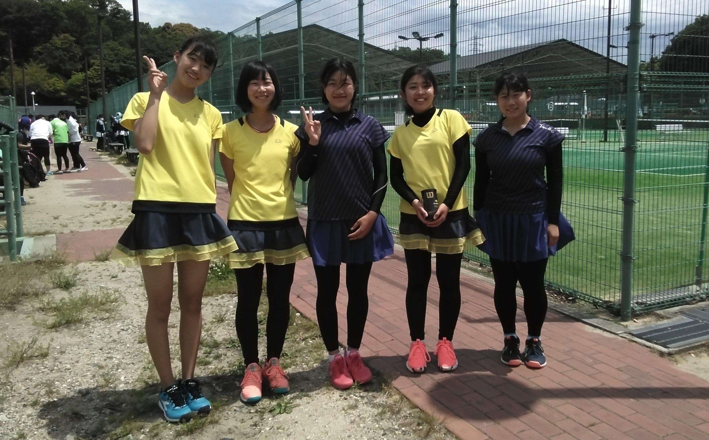
◎女子テニス部は、
５月１５日㈯、太陽ヶ丘テニスコートで開催された、
全国高校総体京都府予選団体の部に出場し、
以下の成績を収めました。
団体メンバー（登録番号順）
１ 村上 らん(３年)
２ 本間 涼帆(２年)
３ 藤本萌七未(２年)
４ 松本 胡桃(３年)
５ 岡田 美苑(３年)
対戦結果
２回戦 山城 ２０(打切) 西京
３回戦 山城 ３０ 同志社
４回戦 山城 ０２(打切) 京都外大西
・２回戦では強豪の同志社との対戦となりました。
シングルスは、顧問の心配をよそに、快勝しました。
タイブレークの末に勝利したダブルスは見事でした。
・３回戦は第１シードの京都外大西との対戦で、
シングルスは完敗でしたが、しっかり打ち合うことができました。
ダブルスは４－４の15-15での打ち切りとなり、
競り合ったまま終えることができました。
・結果として第５シードの面目を保つことができました。
他校との練習試合ができない中、
練習相手になってくれた男子テニス部のみんな、
ありがとうございました。
また、大会の開催に尽力いただいた関係者の皆様
ありがとうございました。
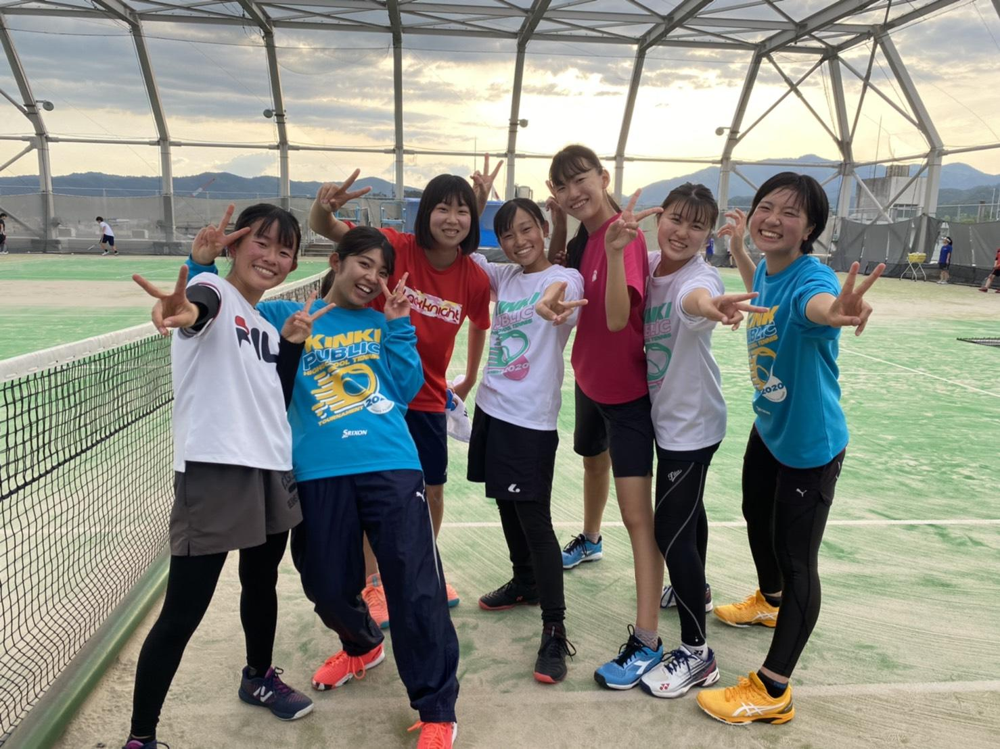
◎女子テニス部 ３年生が引退しました。
５月１５日(土)の全国高校総体京都府予選団体の部を終えて、
３年生が全試合日程を終了し、引退を迎えました。
団体メンバーは試合のあと学校へ戻り、
新型コロナウイルス感染症拡大防止のため応援に行けなかった他の部員と合流し、
引退式を行いました。
３年生は涙の中、後輩達に最後のメッセージを送り、
後輩達は先輩に記念品を渡し、
最後に全員で思い出のスライドショーを観て、
名残を惜しみながら、引退式を終えました。
今まで様々な形でご支援をいただいた３年生の保護者の皆様、
お子様の活躍を直接見ていただけなかったのはまことに残念でしたが、
この２年半足らずの間に、みんな本当に大きく成長しました。
ぜひ、褒めてあげてください。
ありがとうございました。
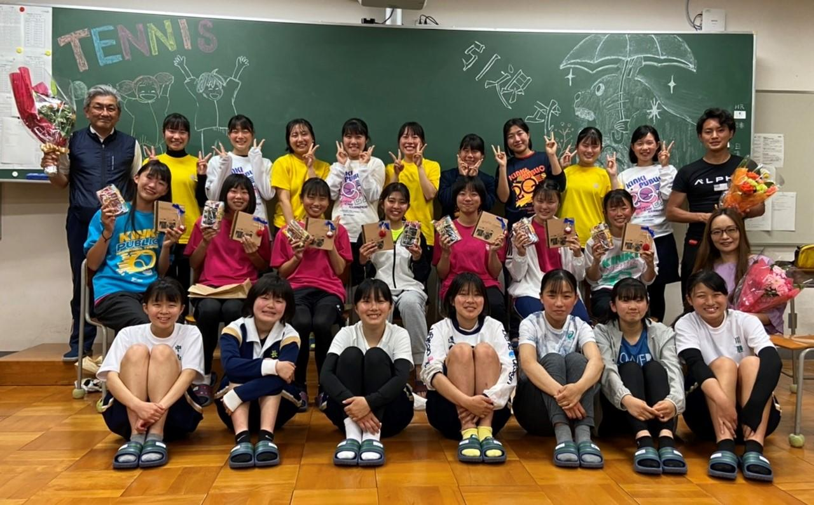
女子テニス部 大会結果・活動報告
◎全国高校総体京都府予選個人の部 結果
４月25日㈰から５月５日㈷にかけて、
各予選会場及び、太陽ヶ丘テニスコートを本戦会場として、
全国高校総体京都府予選個人の部が開催され、
本校女子テニス部は、以下のような成績を収めました。
２次予選出場者 戦績
シングルス ベスト64 本間 涼帆(２年) 安田 奈央(２年)
岡田 美苑(３年) 松本 胡桃(３年)
ベスト32 藤本萌七未(２年)
ベスト16 村上 らん(３年)
ダブルス ベスト16 藤本(２年)本間(２年) ペア
２次予選に進めなかった者も、
多くがブロック決勝まで勝ち上がりました。
みんな良く頑張りました。
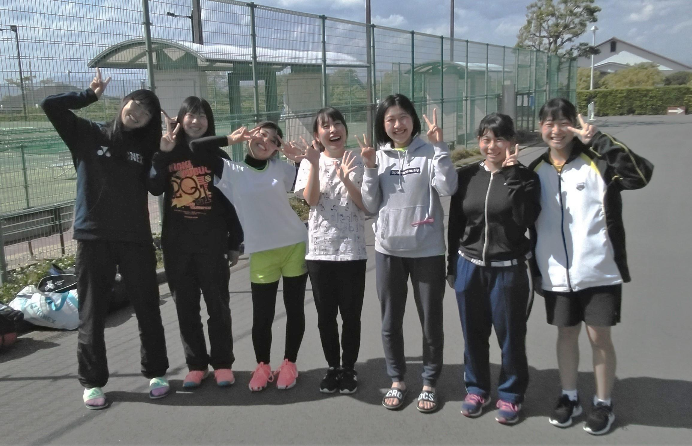
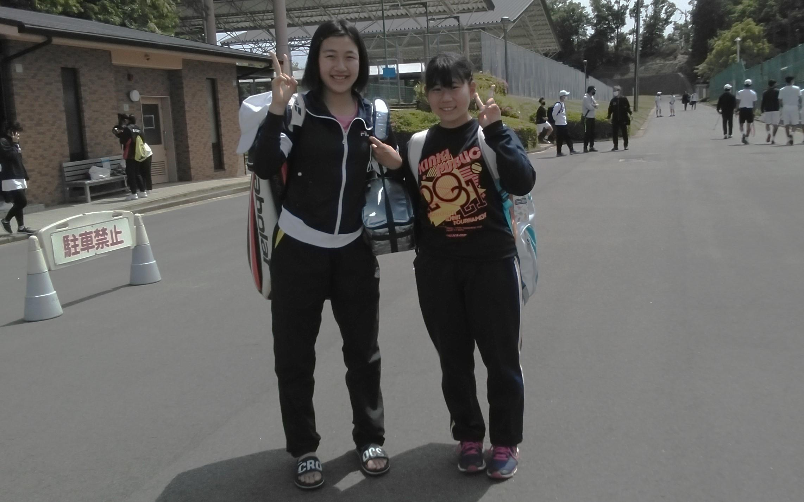
◎2021京都ジュニアテニス選手権大会 結果
３月25日㈭から４月２日㈮にかけて、
各予選会場及び、太陽ヶ丘テニスコートを本戦会場として、
2021京都ジュニアテニス選手権大会が開催され、
本校女子テニス部は、以下のような成績を収めました。
本戦出場者 戦績（学年は当時）
シングルス ベスト64 藤本萌七未(１年) 久保田茉由(２年)
松本 胡桃(２年)
ベスト32 本間 涼帆(１年) 岡田 美苑(２年)
ベスト16 村上 らん(２年)...順位戦により、第11位
ダブルス ベスト32 藤本(１年)本間(１年) ペア
村上(２年)松本(２年) ペア
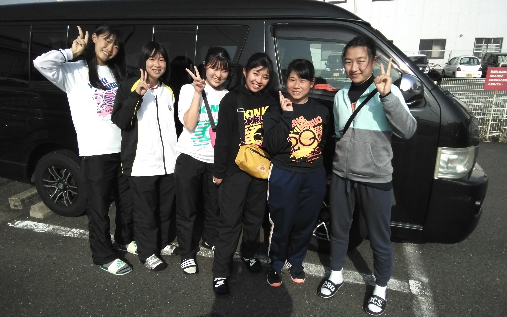
◎長岡京市ジュニアテニス選手権大会 結果 (学年は当時)
３月20日㈯と21日㈰に、アクアパルコ洛西等において、
長岡京市ジュニアテニス選手権大会が開催され、
本校女子テニス部は、以下のような成績を収めました。
シングルス 準優勝 藤本萌七未(１年)
第３位 村上 らん(２年)
ベスト８ 本間 涼帆(１年)
ダブルス 準優勝 藤本(１年)本間(１年) ペア
第３位 村上(２年)松本(２年) ペア
＊本年度は新型コロナウイルス感染拡大防止のため、
本戦のみのトーナメントでした。
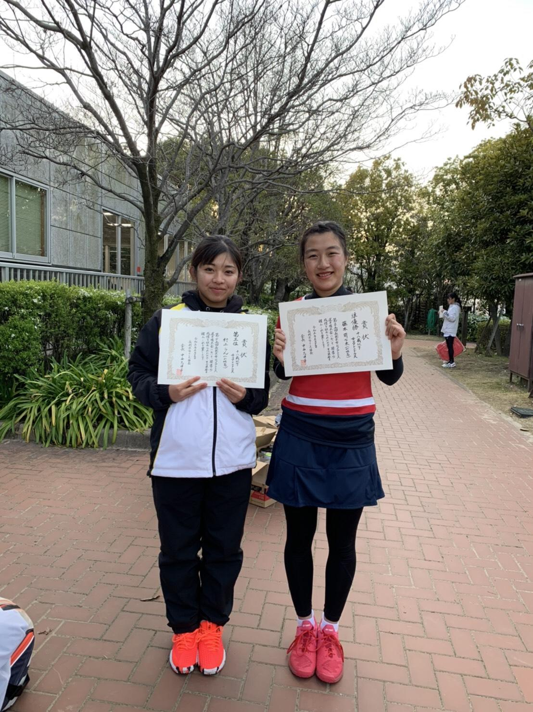
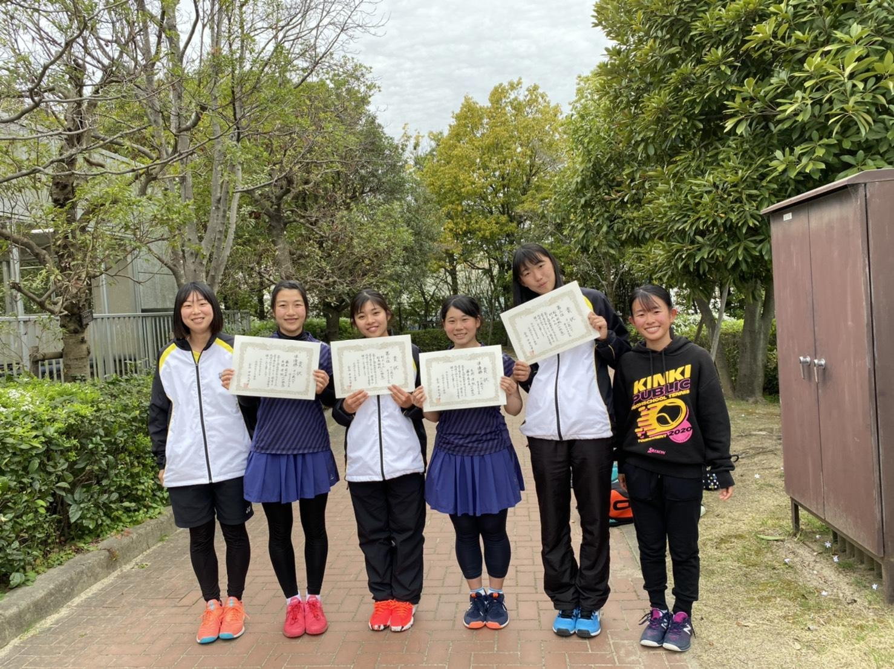
◎３月15日㈪、自宅学習日を利用して、
太陽ヶ丘テニスコートにて、洛西高校と練習試合を行いました。
新型コロナウイルス感染拡大の影響で、
思うように練習試合ができない中、
コートを確保していただき、
男子選手まで動員してくださった洛西高校のみなさん、
ありがとうございました。
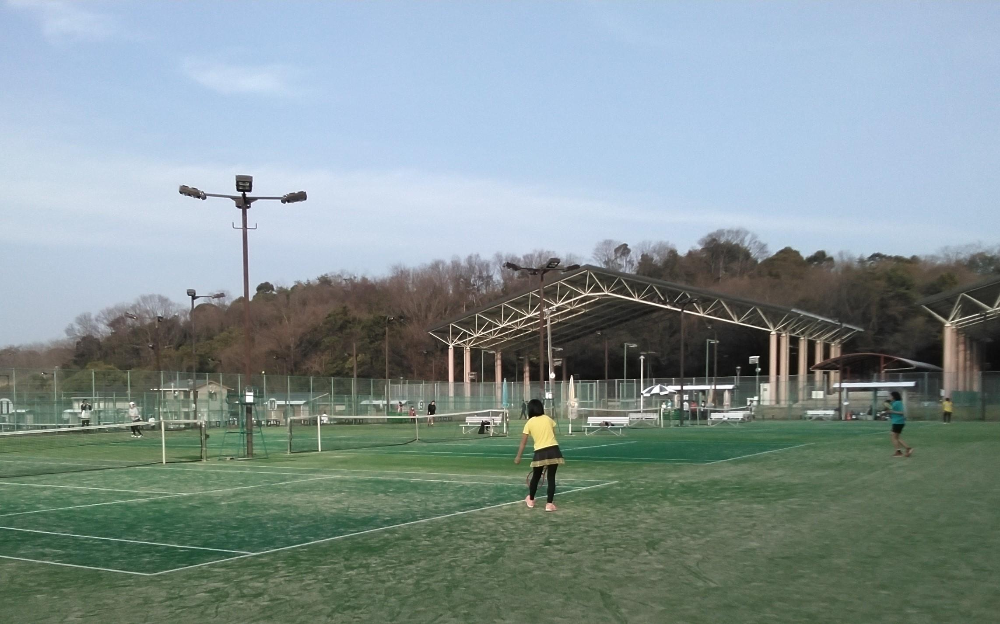
◎３月１日㈪ ３年生が卒業しました。
新型コロナウイルス感染拡大の影響で、
部活動の集大成となる大会が中止になり、
受験勉強においても大変な苦労をした学年でしたが、
すべて最後までやり遂げました。
２月26日㈮のお別れ会では、
例年のような会食やゲームはできませんでしたが、
後輩達からプレゼントを受け取って、
みんな笑顔で卒業していきました。
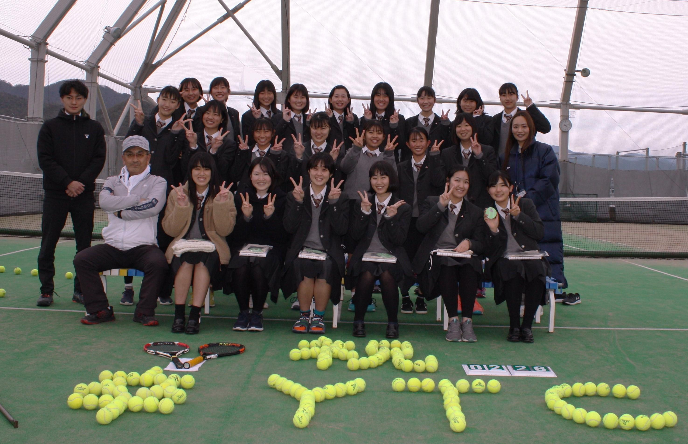
美術部紹介
{kind=link}
活動内容は主にコンクールに応募するための作品を個人で制作したり、大きな作品を部員全員で制作したりしています。大きな作品を制作するのは簡単なことではありませんが、そこから得られる達成感は計り知れないものです。私たちと一緒に素敵な作品を作りましょう！
カテゴリ一覧
主要リンク